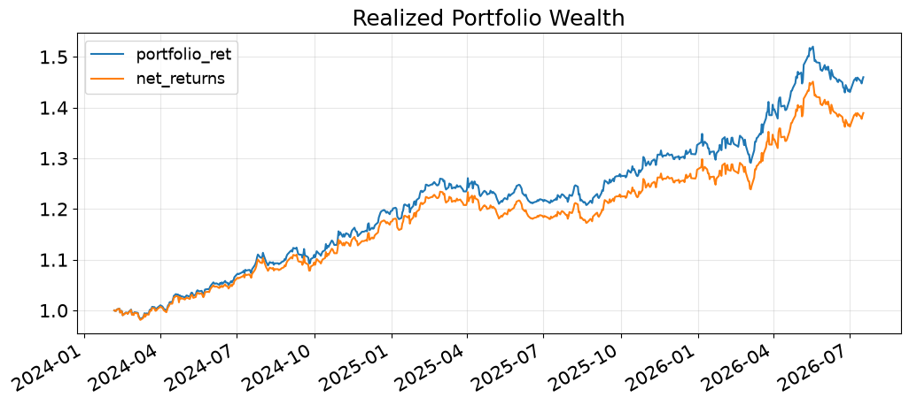

Backtest / after estimated costsInstitutional Order-Flow Equity Strategy
A medium-horizon, dollar-neutral long-short strategy for S&P 500 equities. The research moves from order-flow features through residual-return modelling, portfolio construction, factor hedging, and out-of-sample evaluation.
13.9%Annualized return
1.61Sharpe ratio
6.1%Maximum drawdown